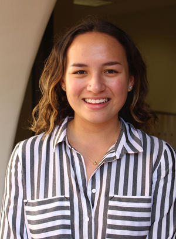
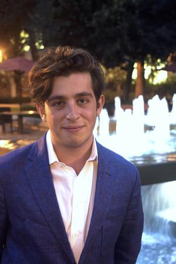

foster the respectful exchange of beliefs all over the political spectrum...

and connect individuals across diverse communities who are interested in civic leadership and political engagement.
What we do
Chapter meetings
After the Unruh Institute's Tuesday evening "Debating the Issues with ProCon" Ground Zero events, Associates meet biweekly to host intimate Q&As with panelists and update members on Associates' upcoming events.
Lunches with Leaders
We host luncheon roundtable discussions each semester to give Associates a chance to speak face-to-face with prominent political professionals.
Los Angeles Private Sector Summit
Every semester, we take our members to a number of Los Angeles based public affairs firms and political technology companies to meet with political operatives. The trip to downtown Los Angeles includes a number of panels and an Unruh community partners mixer. If you have a strong desire to work in the private sector, this is an excellent opportunity to learn more about career opportunities and make an impression with the involved firms.
Los Angeles City Hall Summit
Every semester, we take our members to Los Angeles City Hall to meet with legislators, staff members, and lobbyists. The trip includes a tour of City Hall, a number of panels, and an Unruh community partners mixer. If you have a strong desire to work for a public official, this is an excellent opportunity to learn more about career opportunities and make an impression with those serving in public office.
Internships through the Unruh Institute
By becoming a part of Unruh Associates you demonstrate your commitment to political advocacy, on campus and off. The Unruh Institute, our parent organization, recognizes this and invites you to apply for interships here.
Special Events, Competitions, and Programs
Unruh Associates leads a number of other student-run events and intiatives, from leading USC's efforts on National Voter Regisration Day, to hosting public roundtable dicussions, to holding audience spots for Associates at CNN Town Halls.
Who We Are
The following executive board members were elected for the 2017 calendar year:
Dylan Quintero, President

Dylan Quintero is a senior double majoring in Political Science and Public Relations. He is currently interning with Cerrell Associates, a public affairs firm that specializes in campaign management, crisis communications, government relations, and issue advocacy. During his time at USC, Dylan has interned with California Attorney General Xavier Becerra, Los Angeles Mayor Eric Garcetti, Metrolink, The Greek Theatre, and the Long Beach Convention and Visitors Bureau. On campus, he also serves as Vice President on the Public Relations Student Society of America’s executive board as and has worked for the on-campus public relations firm Tri-Sight Communications.
Adam Grushan, Vice President
Born and raised in Boulder, Colorado, Adam Grushan is a senior double majoring in Economics and Political Science. He currently interns for The Raben Group, a progressive public affairs firm in downtown Los Angeles. His diverse set of experiences ranges from the development of unclaimed property procedure at Folio Investing, to campaign fundraising for Kathryn Barger’s Los Angeles County Supervisor race, to public safety and homeland security policy research for Los Angeles Mayor Eric Garcetti. Adam is involved on USC’s campus with Unruh Associates as Vice-President, the Economics Department as a tutor, and his fraternity Phi Delta Theta as a former secretary. He plans to best make use of his strengths as a leader, analytical thinker, and teammate after graduation.
Eleonora Viotto, Events Manager
Eleonora Viotto, from Seattle, Washington, is a sophomore double majoring in Political Science and Communications. She has previously interned at the Pluvious Group in Downtown Los Angeles as well as volunteered with Rep. Dave Reichert’s (WA-8) office. Most recently, Eleonora interned with Blue Wave Politics in Seattle, WA, working on Maria Cantwell’s re-election campaign, Jenny Durkan’s bid for Seattle Mayor, as well as a variety of local and state races. On campus, Eleonora is a Presidential Scholar and a member of the Trojans Scholars Society, as well as a Residential Assistant for the 2017-2018 school year. Furthermore, she is a member of the Political Science Honors program for freshmen and sophomores. Eleonora is also a staff writer and copy editor for the Daily Trojan, as well as a member of Phi Alpha Delta, USC's Pre-Law Fraternity. After graduating from USC, she plans on attending law school and studying corporate law.
Samantha Kosai, Publicity Director

Samantha Kosai is a sophomore from Irvine, California, studying Sociology. She currently works as a research assistant for the USC Center for Urban Education, focusing on racial equity in university transfer and retention rates, as well as independently researching the interdisciplinary relationship of politics, race, education, and the arts. Sam also serves as President of Oriana, the classical women’s choir, and loves embracing her biracial heritage by being involved in El Centro Chicano and Asian Pacific American Student Services. She is humbled to be working as a Residential Assistant this year and serving as an Undergraduate Fellow for the Center of Excellence in Teaching. In the future, she hopes to earn a doctorate degree and pursue a career as a professor.
Rex Alley, Secretary
Rex Alley, born in Fort Wayne, Indiana, is a junior majoring in political science. After being named Valedictorian of his 2016 class at Juan Diego Catholic High School, Rex earned a Presidential Scholarship to attend USC. He hopes to obtain a doctorate degree in political science and earn a job in the academic field. Last spring, Rex participated in the USC Civic Engagement program, in which he and two other USC students taught a high school civics course that emphasized concrete action and change-making efforts in the field of public policy. Rex is also a dues-paying member of the USC College Republicans and the Vice-President of USC's chapter of Turning Point USA, a nonpartisan student political organization that advocates for small-government and free-market policies, as well as for the protection of freedom of speech on college campuses. Rex has held internships with US Senator Dianne Feinstein, California Strategies, LLC, and, most recently, the office of the Salt Lake County Council in Utah.
Chris Lin, Treasurer
Chris Lin is a junior from Shanghai, China, double majoring in business and political science with a minor in enterprise information systems and currently serving as Treasurer of the Unruh Associates. Previously, Chris has interned at Northwestern Mutual in financial services developing investment proposals for clients and DHL’s Global Forwarding Group in supply chain implementation. He is also enrolled in the Political Science Honors Program. On campus, he is involved in the Auto Club of USC and in his free time, enjoys personal investing, snowboarding and hiking with his dog. In the future, Chris hopes to work in finance, acting in a capital markets advisory capacity to corporations and governments.
Sophie Greensite, External Relations

Sophie Greensite is a senior from Newport Beach, California, studying Political Economy. She currently works at Pluvious Group, a campaign finance firm in downtown Los Angeles. On campus, Sophie is involved with Programming Board’s Speakers Committee, College Democrats, and is a student ambassador for the Dornsife College of Letters, Arts and Sciences. Recently, Sophie was a weekly volunteer at Lawndale High School where she taught a sophomore history class about the intersection of climate change and international relations. Sophie enjoys partaking in research, having analyzed short-term vacation rental law in Los Angeles for public affairs firm Cerrell Associates. This fall she will provide research on electoral reform, a matter she finds to be paramount now more than ever. A self-proclaimed networker, Sophie hopes to work as a booking producer for a political news show.
Rachel Udabe, Institute Liason

Rachel Udabe is a senior from Cerritos, California, double-majoring in Political Science and Public Policy with a minor in Education and Society. She works as the Student Liaison for Unruh Associates. She recently interned at FutureEd, an independent education think tank from Georgetown University, as well as working in the Parent and Community Engagement division of Green Dot Public Charter Schools. On campus, she is a Tour Guide with the Office of Admission and a member of Society 53, and she also has volunteered as a tutor with the Joint Educational Project. Upon graduating, she hopes to teach abroad and earn a Masters in Public Policy, later entering the field of education policy.
Apply
What We’re Looking For
Unruh Associates is open to all undergraduate and graduate students of all majors currently pursuing degrees at USC. We’re interested in driven, student leaders who want to make a difference in the political arena. This interest may be demonstrated through academic work, attending and/or organizing political events, prior political volunteerism, political internships, and politically-related activities whether it be political punditry, issue advocacy, or translatable skills.
Frequently Asked Questions
What is the application process?(1) You must attend at least one of the following Unruh events before you submit your application: Unruh Open House at Bogardus Courtyard on August 29, 2017 at 5:30 PM OR Unruh Institute Panel Discussion at Ground Zero Cafe on September 12, 2017 at 5:30 PM. If you cannot attend any event, please reach out to our e-board @ unruhassociates@gmail.com and we can accommodate your application.
(2) The written application is due September 15, 2017.
(3) An individual interview conducted sometime between September 20 - 22, 2017.
Applicants will be notified of their application status after the written application and interview rounds. Shortly after the interviews we will welcome our new members!
How long is the application process?The application process takes about 10 days, from the written application due date on September 15 to final decisions on September 25.
What if I’m a freshman or have recently become interested in politics?We want you to apply, whatever your experience level in politics. Your application is welcomed as long as you’re interested in politics / civic engagement, want to learn more about what a career in politics looks like, or are passionate about connecting with other politically minded students.
Is Unruh Associates partisan? Do we subscribe to one party’s vision of the country?Nope! We are a nonpartisan organization and invite students of all political persuasions to apply.
Do you have to be political science major to apply?Nope! We want you to apply, whatever your major, school, or interest. We have members from many schools at USC, and our members have a wide variety of skills and interests.
What if I have a different question?Great! Shoot us an email @ unruhassociates@gmail.com, and we’ll get back to you ASAP.
We want you here! Joining Unruh Associates is your opportunity to connect with political professionals through on-campus events and off-campus summits and foster civic discourse through impactful student-run events and initiatives. Applications for Fall 2017 are live now!
Get in touch
Feel free to reach out with any questions.
-
Email us at:
unruhassociates@gmail.com -
Social:
-
Find the Unruh Institute, our parent organization at:
3502 Trousdale Parkway
Social Sciences Building B15
Los Angeles, CA 90089
-
And contact the Institute at:
(213) 740 - 8964and unruhins@usc.edu